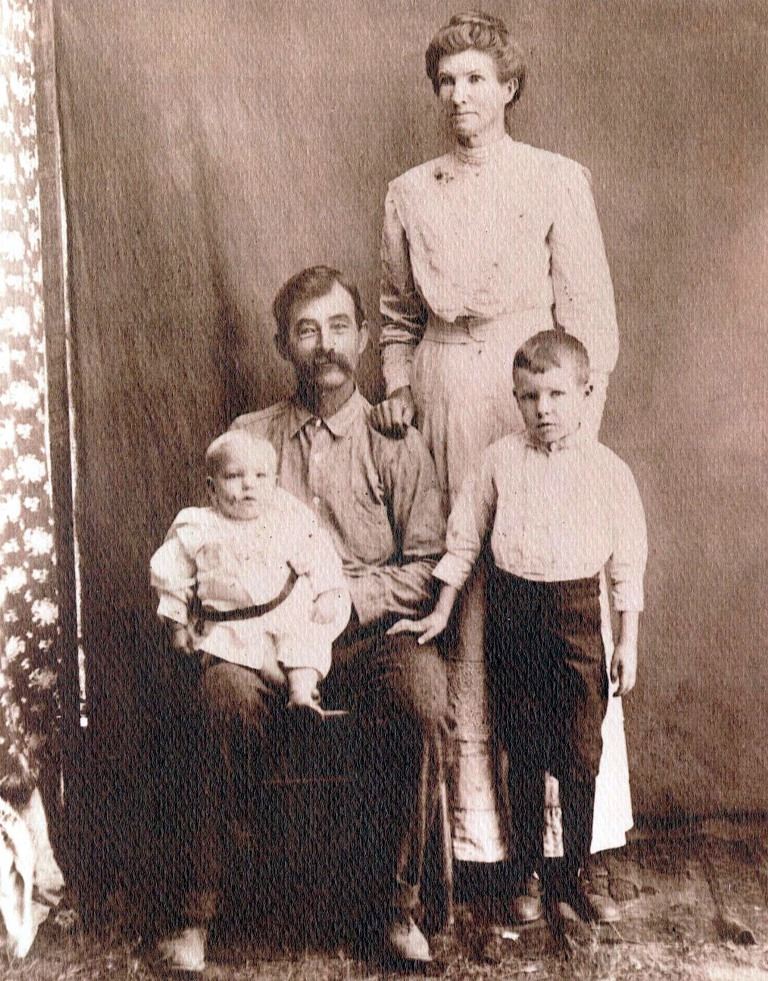

|
|
| 
Carrie Anne BOZEMAN (1876-1916) |
Carrie Anne BOZEMAN 1
Smith Family Tree (http://trees.ancestry.com/tree/13769941) Carrie married John Austin WYNN, son of William Morgan WYNN and Martha Jane CUMPTON, about 1913 in Mitchell County, Georgia. (John Austin WYNN was born on Mar 3, 1865 in Alma, Crawford County, Arkansas, died on Aug 18, 1945 in Yuma, Yuma County, Arizona and was buried in Desert Lawn Memorial Park, Yuma, Yuma County, Arizona 2.) Carrie next married Willie Jefferson ATKINS on Mar 18, 1900 in Alabama. (Willie Jefferson ATKINS was born on Aug 29, 1875 in Alabama and died on Sep 23, 1908.) |
 Research Notes:
Research Notes: